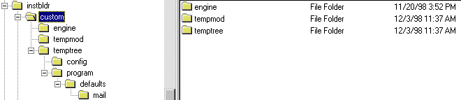

Install Builder Functional Spec
working draft
Author: Gayatri
Bhimaraju
Draft Version: 0.1
Table of Contents
Introduction
Target Audience
Process Flow
Existing
Installer Technology
IB Core Engine
QA Impacts
QA Deliverables
Dependencies
Glossary
Links
Contact List
Introduction
The CCK wizard comprises of:
Install Builder is the part of the CCK wizard that automates the process of producing a custom Communicator installer. It takes inputs from the previous sections, combines it with data it gathers in its screens and creates a CD or network installer for a customized communicator.
- Branding
- Customizing Communicator
- ISP Customization Settings
- Install Builder
Document Audience
The target document audience are mainly
the QA team and the CCK team. It's purpose is to explain clearly how Install
Builder functions and generates a Media Image. It provides enough familiarity
to make it easy to understand any subsequent progress and status on IB.
Product Audience
The target product audience are ISPs.
The product allows them to perform customization and branding of Netscape
client software and to distribute this software to their customers.
The small and medium ISPs require that the product be easy enough to use to perform client customization without having read any documentation. Their perspective to have a product that is easy and stable.
The large ISPs require a product that allows maximum flexibility accompanied with technical documentation describing the more granular client customization tasks they would address. Their perspective to have a a product that is stable and bug free.
Process Flow
The functionality of Install Builder can
be divided into the following sections:
User Interface
(Will put a link to these after Robin
has the screen shots ready).
The user interface of Install Builder
consists of a set of screens that the user is lead thru. These are dynamically
generated by the wizard machine from iniFiles. Have to take Robin's screen
shots and create corresponding iniFiles for each of the screens.
As the user navigates from one screen to another, data is collected into a temporary file, to be used in customization later on. This is described in the Navigation and Data Collection section--described a few sections down.
Inputs
Inputs include all the files install builder
needs to create a customized communicator installer. It doesn't necessarily
mean that they have to be passed to it through a program, but it more implies
that install builder assumes that they exist and uses them in its processing.
Some of these files are: defaults.dkb, setup.ini,
instbldr.ini and comm.z.
It modifies these files as required.
Directory Structure

The yellow highlighted part in the figure illustrates the directory structure of install builder. The files listed on the left are the files in the insstbldr subdirectory and include instbldr.exe. All input file locations referenced to in install builder are relavative to this directory which contains instbldr.exe
Initializations
The purpose of doing initializations is
that given that there are a set of existing data files that it would modify
to create a customized installer, it needs to identify all those files
and set the their locations. These would be used as global variables to
create the final output. Some of the initializations include:
- Create custom\engine subdirectory. Call this the CustomPath.
- Create a temporary file choices.tmp in current directory (indicated in blue). As the user goes through the IB screens, all the user data is dumped into this file.
- Load the drop down list box with choices of the different installations available. Like, it might be a new installation, or might be using an existing customized installation (identified with .imk extensions)
- If it is a new installation, copy the contents of an existing file default.dkb into choices.tmp. This implies that as the user goes through the install builder screens, relevant fields are populated with these defaults.
- Make a copy of the generic setup.ini from the source directory to an area where it can be customized. This implies making a copy of it and putting it under custom\engine\setup.ini.
- With these set of initializations in place, the wizard brings up of the first install builder screen and leads you through all of them, as you click Next.
choices.tmp (to dump all your data in each screen)
custom\engine\setup.ini (for further customizations)
Navigation and Data Collection
This is the information that is collected
from the user in the install builder screens. When the user enters each
screen, default values are read from the appropriate file and relevant
fields are loaded with the defaults. As the user moves on from one screen
to another, it collects all the data that the user entered and dumps it
into a temporary file.
In our case, like described above, this file is decided to be choices.tmp. It is initialized to defaults.dkb and it gets modified as the user enters/modifies data. So essentially the only function of the install builder screens is to collect data and dump them into choices.tmp.
Let us move on to the IB Core Engine section to see how on clicking the Finish button in the last screen, all the data gets processsed to generate the CDLayout.
Existing
Installer Technology
When you click on the Finish button in
the last screen of the wizard, all the data that has been collected (into
choices.tmp) is now processed. Ultimately the goal is to generate a CDLayout.
To achieve this, an Install Builder Engine is defined. This comprosises
the core functionality of IB and it is covered in the next section-IB Core
Engine. This part of IB completely depends on the current Installer technology
being used. This brings Cathleen Wang and team into picture.
The installer team determines the technology to be used to build a Media Image of communicator:
- It takes as an input a given set of files required to run the browser.
- It merges and compresses them and generates a set of files into an output directory.
- This contains setup.exe and some other required files.
- User then runs setup.exe to install the browser on his/her machine.
- Which file you would be writing out the customizations.
- Which files to merge and compress.
- What commands to use to generate a CD layout that contains setup.exe and other related files.
- So, all in all, the installer technology provides an API for IB to use to generate relevant files.
Previously Install Shield 3.0 was used to generate all the communicator installations. IB was built on that:
- So the current IB is completely woven under the assumptions of using Install Shield 3.0.
- It assumes the existence of files like comm.z, comm.ini (described below)
- It uses the API of Install Shield 3.0 to generate files using processes like IComp, Merge etc.
- It cannot exist without it's parent Install Shield 3.0.
Now the installer technology is changing. It is likely that they will be using a new technology from MindVision. At the time of this document, it is not clearly determined what interface will be provided for the CCK team to use.
There is some preliminary documentation on the status and plans of the new installer technology:
http://grok/install/windows/demo/InstallPOC.html
IB will be moulded as the Installer technology
evolves.
IB
Core Engine - The Existing, Old Model
Though IB core engine will change, as
the new installer technology evolves, it still helps to gain a basic understanding
of how it was build based on Install Shield 3.0. As the basic requirement
remains to be to generate a Media Image from a given a set of files.
The IB Core engine functionality can be divided into 3 major subsections:
- Reading iniFiles.
- Merging Files.
- Creating a Medium.
Reading iniFiles
- After reaching the last screen and clicking on the Finish button:
- Create an instance of IB Engine.
- Read the name of the output directory and create it.
- Define strings SourcePath, CustomPath and initialize them to IB Installed Path which is the parent instbldr directory (in this case, drive:\cck4.5\instbldr).
- Call ReadIniFile method of the IB Engine. Pass it the CustomPath as an input.
SubDirectory structure is created in the custom directory. Notice that the engine folder was copied at the very start (during initialization phase) and setup.ini file was copied into it from the source directory.

So 3 directories are created, some with
further sub-directories. The contents of each are as follows:
(The leaf nodes, which represent the actual
files, are shown in red) After creating these
directoties:
- A for-loop is established to go through all the modules in the setup.ini file.
- When it gets to either Account Setup (as), Communicator (comm) or Navigator (nav), it will perform the Install Shield icomp process.
- This will put customized files into these modules.
- engine
- license.txt - If it exists, replace this with custom license file
- readme.txt - If it exists, replace this with custom readme file
- setup.ini
- tempmod
- as.z
- comm.ini - Copied from source\modules\comm.ini.
- comm.z
- temptree
- config
- netscape.cfg - If it exists, replace this with custom netscape.cfg file
- program
- defaults
- bookmark.htm
- If it exists, replace this with custom bookmark.htm file
- pab.na2
- inbox - Copied from defaults\mail\inbox in instbldr main dir.
Now, do the following:
- Assemble the source path for the z file to be customized
- Assemble the path to the area where the merge will take place
- Copy the Z file to a temp area
- Assemble the path that contains the module's customized files
- Assemble the command line to icomp.exe
- Perform the actual icomp (merge) process
Creating a
Medium
The final media image can be a network
download, a CD image or a diskette.
The process has these steps:
- Create a media directory.
- Copy all the .z files and their associated iniFiles to the media dir.
- Get the customized version of relevant files like comm.z, readme.txt, license.txt etc.
- Use "packlist.exe" to pack all the files and generate a CD Layout.
Output:
The final media image that can be burnt
into a CD and distributed.
QA Impacts
Some of the things that can be identified in IB for white box testing include:
UI screens
Based on the UI design Robin would provide,
I will be generating a set of inifiles for each of the screens of IB.
Like all other modules, white box testing
would have to be done on reading each of these iniFiles and generating
an output that exactly matches Robin's screen shots.
The design of this would look something
like this:
iniFile -> iniFileGeneratorProgram
-> ScreenShot
Data output
Collect a set of iniFiles, run them in
a wizard mode, enter data and see if the data is written into an output
file correctly. This output would then be used for all the customizations.
Linking DLLs
DLLs will be linked to the dynamically
generated dummy widgets in IB, and testing can be done to make sure that
functions in the DLLs are getting called properly and no run-time mishaps
occur due to those DLLs.
Installer API
After the installer API is finalized,
IB will be modified to generate a CD Layout using a set of initial inputs
which currently include comm.z, setup.ini etc. This layout should include
setup.exe and the associated files. QA should be able to run this setup.exe
and install customized communicator.
Final output
QA should certify that the CD Layout generated
installs customized communicator as expected and runs properly.
QA will be provided 2 deliverables:
Wizard machine's
Screen Generator
This takes a set of ini files as input,
and generates corresponding UI screens.
What QA should expect in the iniFile
The iniFile should contain all the information relevant to each widget to be drawn.
Each widget can contain the following information:
Install Builder's CDLayout Generator[Widget 1] -- section Name
type -- Type of widget, for example, button, list box, editbox
name -- a unique name is given to each widget, as it has to be stored in the globals
value -- this can be the title of a button, initialization value of an edit box etc.
start_X |
start_Y |------------ These four values represent the coordinates of the widget
width |
height |
dll -- This represents the dll to be loaded when processing this widget
action -- This gives the name of thefunction to be called in the above dllThe sectionName, type, name, start_X, start_Y, end_X and end_Y are compulsory for every widget.
Run the program and generate output
The program would require the name of an iniFile as an input. It will generate the corresponding screen as an output.
Command line interface will be provided. (This has not yet been explored. I will work on it). You would have something like this: ScreenGenerator iniFileName // where ScreenGenerator is the program nameThings that could be tested
- Are the right screens generated
- Can you modify the values in the iniFile and have them reflected properly on the screens
- Is an appropriate error message thrown if one of the essential fields of any widget are missing: like what happens if you delete the type field of a widget?
- Discover any error situations that the program is not handling properly.
This takes a set of ini files as input, and generates a CD Layout. A setup.ini file is provided which has a list of the components to be included in the customized installation. To start with, a setup.ini with Communicator and Internet Setup will be provided.
- What QA should expect in the setup.ini
File
- The program would called with a command like this: IBDemo outputDir
- If no output directory is specififed, it will generate a CDLayout in a default output directory like c:\IBDemp\Output or something, as everybody has a C drive.
- If output directory is specified, it will be generated in the corresponding directory. Please note that the complete path of the output directory has to be specified.
- Can you run the setup.exe in the output directory and install a customized cummunicator?
- Can you change and reflect other customizations (see relevant section below)
- Is an appropriate error message thrown if an improper output directory is provided.
The setup.ini will contain a section: [Components] This will have a list of all the components to be included in the installation. QA should verify that after generating the CD Layout and running setup.exe, are all these components displayed in the customized installation?
Run the program and generate output
Things that could be tested
Other Customizations
Other customizations, if any, are included in a file called choices.tmp. This file has to be converted into globals. This will be done soon. I will then have more information on how QA can modify and test other customizations, and will add that information to this document.
Dependencies
Completion of wizard machine
Installer team decisions:
Glossary
This is contain a list of all the files
that would go into the final CD Layout and a one-liner
description of what each of these mean.
This would make things clear for everybody.
This will be populated as I get aware
of the new installer technology.
Links
Will have links to Robin's screen shots.
Will list some sample code that QA can
use for relevant white box testing.